A tour of the portal
From the first start to your daily view, with the real screens.
Welcome: ready in about two minutes
Add your passkeys (two, so one lost key is not a lost vault), connect your first tool, done.
A tool can connect itself: run vaultgate login, check the code from its terminal, touch your passkey. You never copy its key.
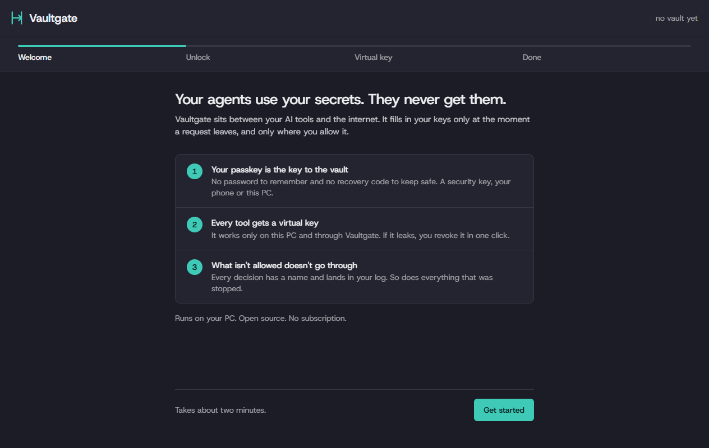
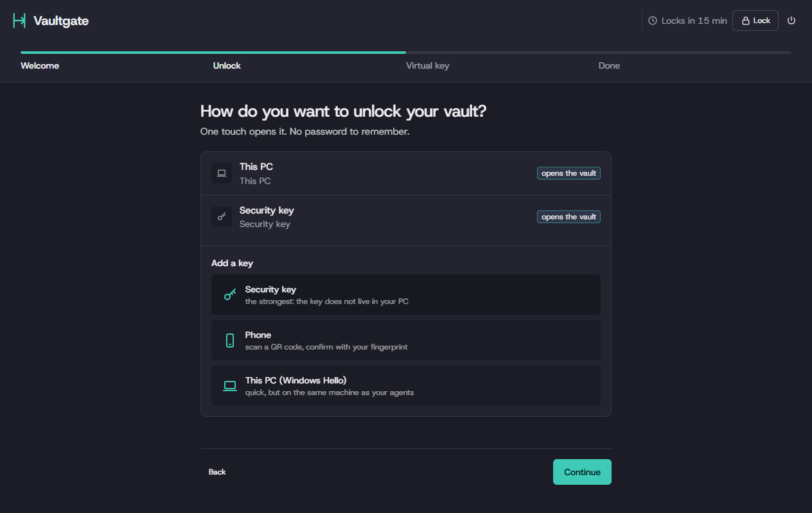
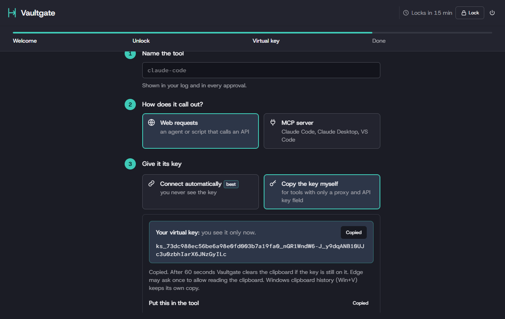
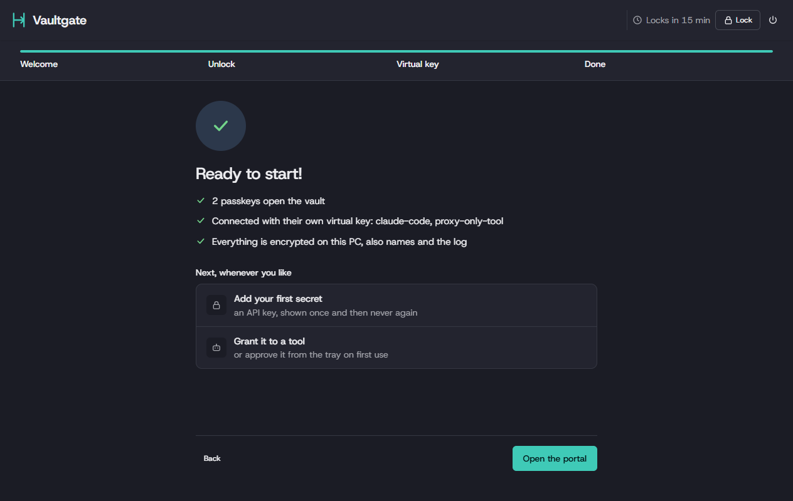
Activity: every decision, with its rule
On the left what went out and what was stopped. On the right one decision in full: the rule that made it, the chain from tool to domain, and what you can do about it.
A hundred calls to the same API become one line with ×100, so nothing important scrolls away.

Approve: you decide, in the tray
A new combination of tool, secret and domain asks you first, with the request. Once lets exactly one request through. Allowing for a time makes a grant, and that asks for a touch of your passkey. No answer: stopped.
The tray still speaks Dutch; English follows.

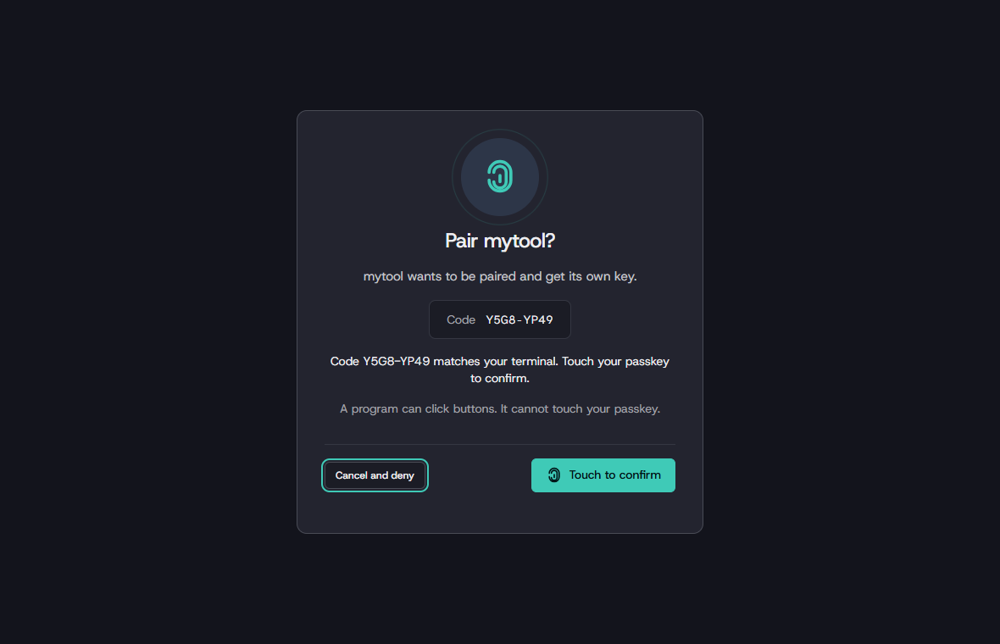
Virtual keys: one per tool, useless elsewhere
Each tool gets its own key. It works only through Vaultgate, from the addresses you allow. You see it once, when you make it; after that the portal only says when it was set.
Paired keys rotate by themselves. Rotate or revoke any key in one click; your real secrets stay the same.
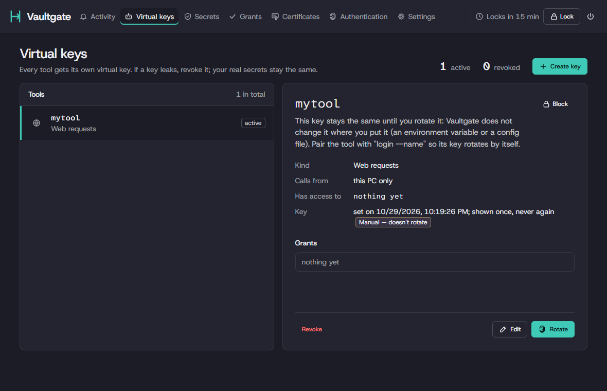
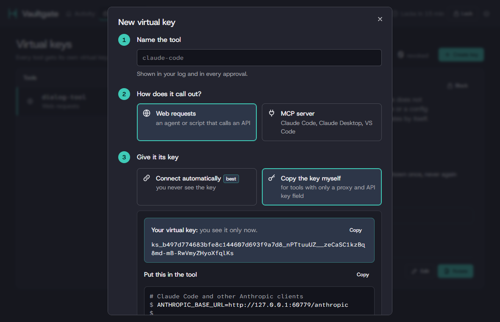
Secrets: in once, never back out
A value travels once, from the field into the vault. No page and no API returns it. Each secret has the domains it may go to.
Sensitive is on by default: then every approval, even a one-time one, asks for a touch.
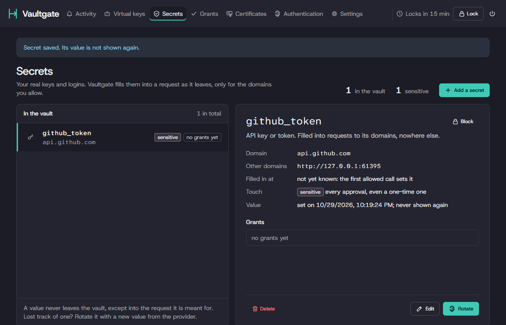
Grants: tool, secret, domain
A grant is one chain: this tool may use this secret on this domain. Quietly, with a notification, or ask every call. When it ends, the next call asks you again.
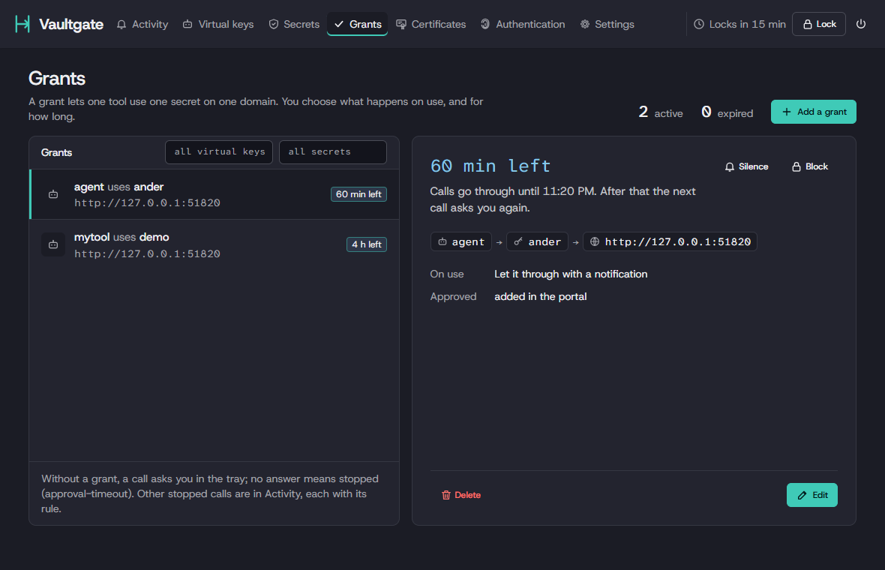
Certificates: only to the real site
A renewed certificate under a root you already trust needs nothing from you. A chain that suddenly ends at a root you do not trust stops every request until you decide: that is what someone in the middle looks like.
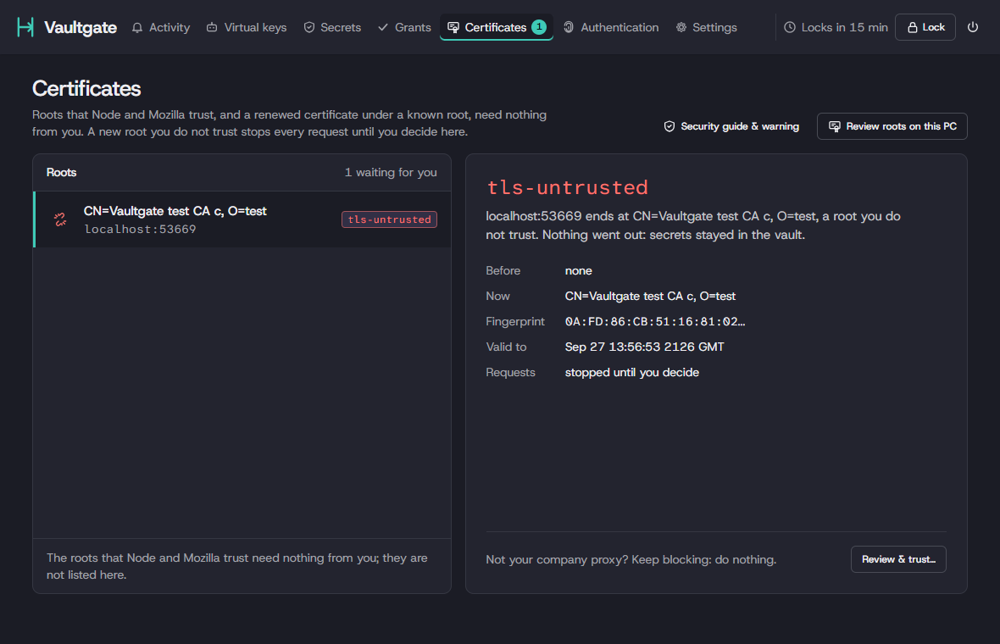
Opening the vault: one touch
The vault opens with a passkey: a security key, your phone or Windows Hello. Authentication shows which keys open the vault and which only sign you in.
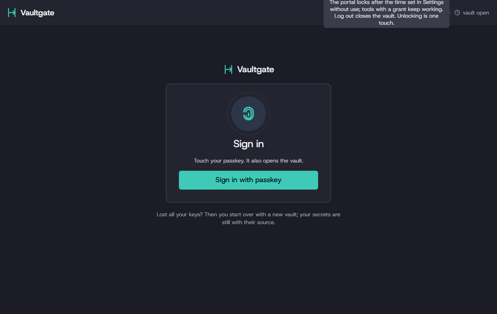
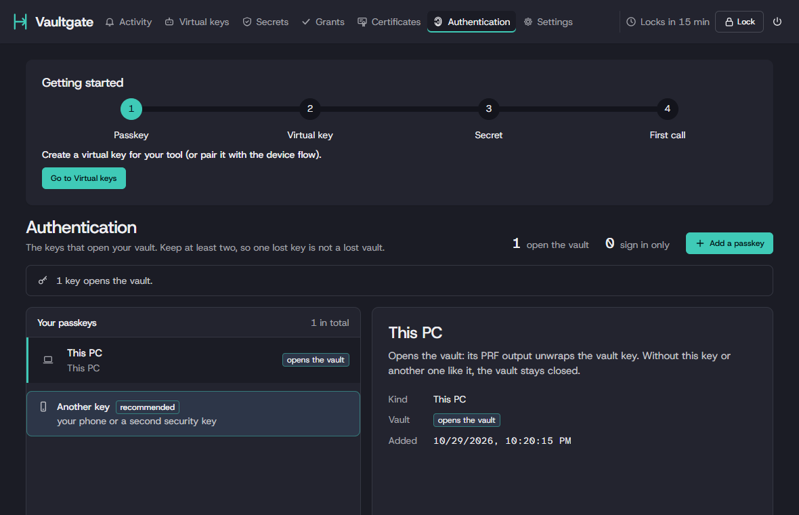
Settings: saved as you choose
When the vault locks, how long the tray waits, which passkey a touch needs, light or dark, other machines and quiet hours.
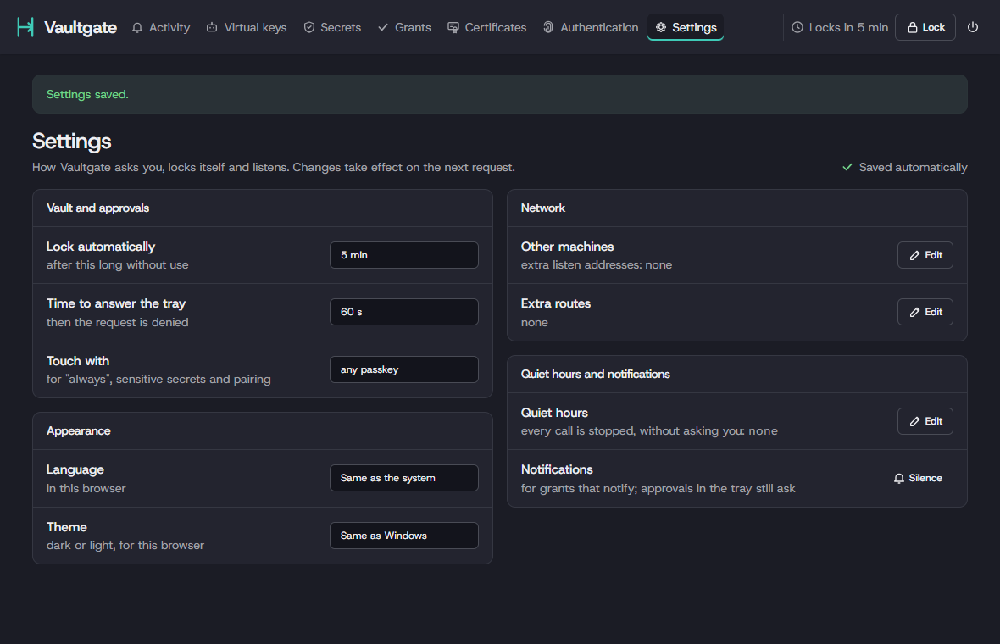